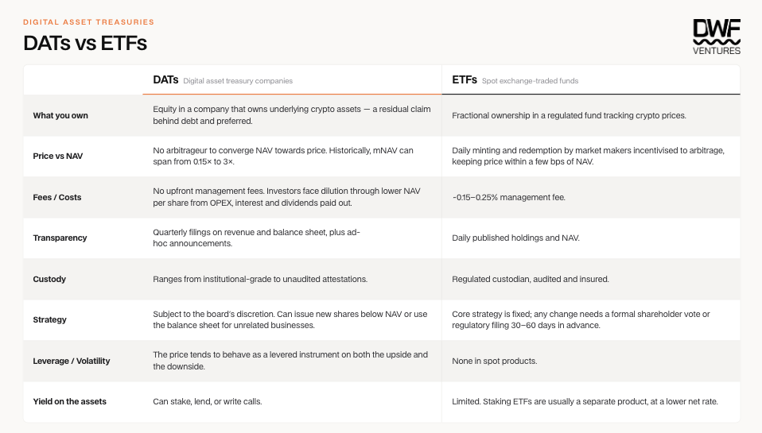
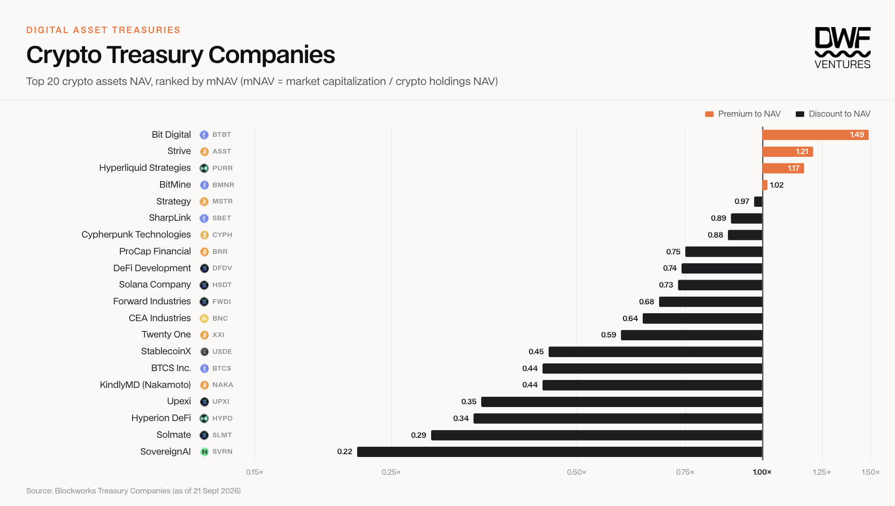
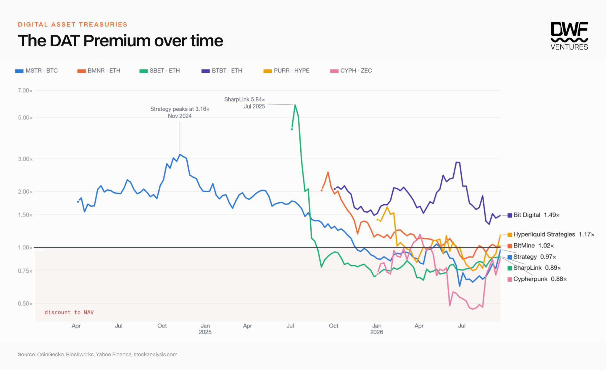
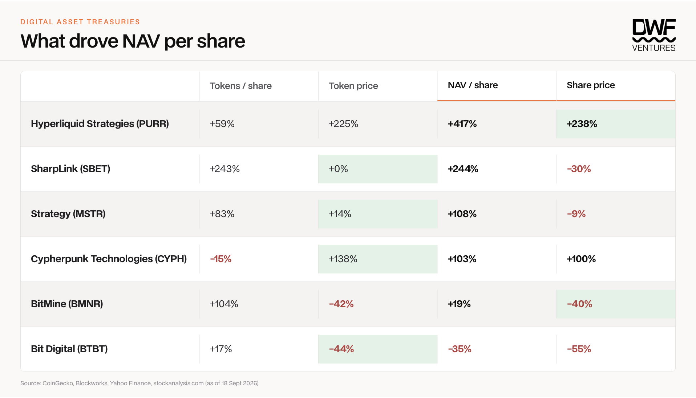

Key Takeaways:
Of the top 20 DATs ranked by AUM, only 4 are trading at an mNAV above 1. This reflects the current state of the market, where the access premium is no longer valued as highly as before.
Since inception, the top DATs have mostly underperformed simply holding the asset. Among those that outperformed, the excess returns are minimal in comparison to the risk that holders take.
On a shorter time horizon (<3 months), DATs can outperform their underlying asset by 15–40% given that mNAVs are at lows and the underlying asset price rises — essentially a catch-up bet if conditions align.
Moving forward, DATs will be assessed more on their operators and capital structures, as that differentiates the value of companies beyond just the assets accumulated.
Treasury management is not a new concept. It has mainly revolved around fiat assets and bonds in traditional finance, and treasuries are usually used as capital vehicles for illiquid or private asset classes such as real estate and private equity or credit.
Digital Asset Treasuries (DATs) have been around for several years, led by Strategy making its first Bitcoin purchase back in August 2020. What started out as a capital diversification strategy quickly became a full allocation into BTC, with the company formalizing its status as a corporate Bitcoin treasury in 2025. Since then, the total value of assets held by crypto treasury companies has surpassed $180B, marking a 70% YoY increase on average since 2020. Most growth occurred in 2025, when small and microcap companies pivoted into holding digital assets as a strategy for higher returns, creating a mini bubble back then.
While many companies include digital assets on their balance sheets today, this article focuses on companies whose core business model is the accumulation and management of digital assets. We look into the performance of crypto treasury companies against their underlying assets, assessing different models and highlighting the risks of different companies.
What are DATs?
DATs can be defined as any publicly listed company utilizing the accumulation of digital assets on its balance sheet as a core business model. Unlike ETFs, which are built to track the underlying asset closely, DATs are more of a vehicle for speculating on sentiment towards the asset. DATs’ performance also depends on a variety of factors, such as how the company chooses to raise financing, the timing of deploying capital and how it manages exposure — which explains the presence of different vehicles for the same underlying asset. The table below compares the mechanisms of a DAT vs. an ETF.

DATs vs. ETFs
Market to Net Asset Value (mNAV) is a measure of a company’s market capitalization over the actual value of its crypto holdings. When mNAV is above 1, the company trades at a premium to its crypto holdings, which reflects positive investor sentiment towards the company or underlying asset, and vice versa. The data below shows that the majority of DATs trade below the value of their holdings, pointing to slightly negative sentiment towards holding companies. Note that mNAV numbers do not take into account any debt or preferred structures.

Top 20 crypto treasury companies by mNAV (Source: Blockworks, as of 21 Sept 2026)
Companies holding the same underlying asset can still have wildly differing premiums. This is due to differences in their strategies for accumulation and issuing new shares. Bit Digital and Strive both carry out more aggressive reserve accumulation and actively run At-the-Market (ATM) offerings to keep the reflexive loop going, while companies trading at extremely high discounts to NAV are much more passive. This explains the wide dispersion in mNAV and highlights the need to consider external factors before investing in one.
The Reflexive Loop
The general goal of DATs is to generate higher returns than the underlying asset by growing the number of tokens per share, increasing each shareholder’s stake. There are several strategies that allow companies to do so:
- Issuing new shares ATM: one of the most common methods. By selling shares at a premium to raise cash, the company can use the proceeds to buy more tokens and directly increase shareholder value. This assumes the company will always be able to raise at a premium, and it usually only works in an uptrend (when mNAV > 1).
- Convertible debt: frequently used by Strategy (MSTR). The conversion premium is usually priced 35–55% above spot, and if the notes successfully convert at that price, MSTR has effectively received a 0% loan with no debt obligations. This adds to the accretive loop, as the company can continue raising money against its current collateral.
- Increasing alternative revenue streams: through staking, mining or other business lines. SharpLink recently announced a $200m allocation into stETH and a $125m onchain yield fund in collaboration with Galaxy. Cypherpunk Technologies (CYPH) became the largest mining fleet for ZEC, receiving over 18% of the network’s emissions. All of these generate more cash flow for the company and more tokens per share for shareholders without reducing the principal.
These strategies aim to be accretive to shareholders, but ultimately, overall performance still relies heavily on the underlying token. Looking at the top companies, it is clear that most DAT premiums fall over time, and it is hard to see them recover as demand for shares does not outweigh the underlying gains in price.

The DAT premium over time (Source: CoinGecko, Blockworks, Yahoo Finance, stockanalysis.com)
Most companies peak at the initial offering, given that buzz is always highest at that stage. Strategy peaked in November 2024 as BTC began its run-up to ATH, when demand for speculation and leverage was at its highest. An exception is Bit Digital, which has managed to maintain a significant premium to NAV through growing non-crypto revenue streams and well-timed equity financing. Over 89% of its Q2 revenue came from its cloud infrastructure business (WhiteFiber), which helped maintain share value despite a fall in the value of its digital asset holdings over the same period.
Since inception, most companies have managed to increase their tokens per share, which theoretically increases shareholder value. Factoring in token prices tells a different story, as companies like BMNR and BTBT faced significant drawdowns on ETH depending on their entry timing. Overall, NAV per share has increased by up to 400% for DATs purely focused on accumulating digital assets, which signals that the business model does work.

What drove NAV per share (Source: CoinGecko, Blockworks, Yahoo Finance, stockanalysis.com, as of 18 Sept 2026)
However, looking at token vs. share prices since inception, investors have generally been better off holding the underlying token. Even where shares have fared better, the outperformance is minimal — to the point where the added risk of holding a DAT may not make sense. This also depends on the time horizon over which the shares are held.
Since July, we have seen strong outperformance of shares by 15–40% against tokens, with mNAVs rising from lows of 0.5–0.8x to 0.7–1.0x. In particular, PURR and CYPH rose 31% and 38% more than their underlying tokens over this three-month period. Tokens per share did not increase much during this time, signifying that share prices are still ultimately sentiment-driven, with price appreciation arriving as the outlook for crypto markets turned more positive. Over a longer horizon beyond three months, the token remains the better bet for investors.
Factors of Consideration
The question remains: should you buy a DAT? While DATs have historically been seen as a levered bet for investors to play catch-up, we would argue that the market around them is a lot more mature now, and there are many other factors to consider when making the choice.
Availability of the underlying asset
DATs emerged as a vehicle for providing digital asset exposure to institutions that were previously highly regulated, so the mNAV premium was seen as an access premium for institutions. However, with the SEC proposing to quicken the listing process for ETFs by over 75%, the access premium has shrunk significantly over the years. Institutional buyers now have far more options across ETFs, regulated private funds and custodian infrastructure that allows for direct deployment — none of which was possible before.
Operating costs and strategies of the company
This is a mix of assessing the operating team’s ability to diversify revenue and to adjust financing strategy in response to market conditions. For example, Strategy’s capital structure prioritizes debt holders and carries consistent pressure to fulfil dividend obligations. This potentially puts a strain on BTC reserves, as it introduces forced selling that would dilute existing shareholders. Once confidence in the team is affected, it becomes hard to attract new investors, which can initiate a downward spiral in Strategy’s mNAV.
Overall
The DAT market has grown tremendously, and assessing these companies is far more complex now. The earliest entrant had an advantage: available capital for financing was much larger due to the inability to access the underlying asset directly, which allowed Strategy to compound through persistent premiums to NAV. However, that edge has disappeared for most of the companies that pivoted in 2025.
The reflexive loop means that once mNAV drops below 1, it is hard for companies to reverse it. Companies that rely on convertible or collateralised financing carry higher risks, as the shares become priced by equity market sentiment and the company’s financing terms more than by the underlying asset. As a result, only a minority of companies have delivered higher returns than simply holding the asset directly.
Moving forward, we expect to see more new entrants as crypto market sentiment improves. However, companies will increasingly be assessed on the boards and capital structures supporting them rather than the amount of assets accumulated.